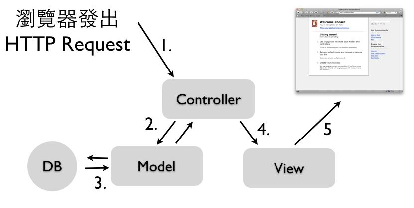

“Life’s too short to build something nobody wants” - Ash Maurya, Running Lean 作者
Ruby on Rails是一套非常有生產力、維護性高、容易佈署的Web開發框架。從一開始不知名的玩具，到現在它已經成為全世界Web應用程式開發的首選框架之一。進入學習的旅程之前，我們先了解為什麼它如此特別？
從1990年Tim Berners-Lee發明全球資訊網之後，就開始有了動態網頁的需求，早期最風行的方法是使用Perl CGI，會在Perl程式中，輸出HTML內容，例如以下是一個簡單的計數器：
#!/usr/bin/perl
open(FILE, "count.txt");
$num = <FILE>; $num++;
close (FILE);
open(WRITETO, ">count.txt");
print WRITETO "$num";
close (WRITETO);
print <<PRINTAREA;
content-type:text/html\n\n
<style>
<!--
body {background-color: black; line-height:1;
margin-top: 0cm;
margin-left: 0cm;
margin-right: 0cm}
-->
</style>
<body><center>
<b><font size=1 color=white>
$num</font></b>
PRINTAREA
讀者可以發現，這樣的方式在HTML內容佔多數的情況，顯著十分不容易維護及閱讀。大約在2000年左右，PHP、ASP等以樣板(Template)為主的程式語言出現了，同時期搭配著關聯式資料庫如MySQL一起流行起來。這種寫法與上述的Perl CGI恰巧相反，是在HTML樣板中內嵌入程式和SQL指令，例如以下是一個PHP&MySQL程式，其中用<?php ... ?>括起來的部份，就是PHP程式：
<?php
$db = mysql_connect("localhost", "root", "password");
mysql_query("SET NAMES 'utf8'");
mysql_select_db($SERVER['db']);
?>
<html>
<?php
$sql="select * from news where Class='1' or Class='3' order by CTDate desc limit 0,5";
$result= mysql_query($sql);
while ( $arr=mysql_fetch_array($result) ) {
echo <<<NEWSEND
<div class="box">
<span class="box-title-1"> <b>【$arr[Title]】</b> $arr[CTDate] </span>
<div class="box-content">
$arr[Text]
</div>
</div>
NEWSEND;
}
?>
</html>
這種用法非常容易使用。特別像是討論區、部落格(Blog)、內容管理系統(CMS)、Wiki這類系統，重點主要在資料的保存和顯示，牽扯的複雜商業邏輯不多，特別適合這樣的開發方式。程式只是資料庫系統的糖衣介面，不需要MVC架構、不需要頁面與程式邏輯分開、不需要物件導向技術，也可以開發的很好。
但是近年來隨著Web 2.0和雲端風潮帶來越來越多的Web應用程式開發需求，網站軟體的規模開始增加，需要加入更多的商業邏輯和功能，這樣的開發方式，導致了整個專案的結構變得十分混雜，不利於團隊合作開發。要接手維護這樣的網站，常常會不知道如何閱讀及修改起，因為所有的商務邏輯與HTML混雜在一起，不同人開發就有不同的程式架構，缺乏程式文件是常有的事情，也不容易進行測試。
於是我們有了Web開發框架的需求，引入完整的物件導向觀念和技術。而所謂的框架就是制定好了一套規範和慣例，讓開發者在該架構下來進行開發。
維基百科是這樣定義的：「軟體框架(Software framework)」是為了實現某個業界標準或完成特定基本任務的軟體組件規範，也指為了實現某個軟體組件規範時，提供規範所要求之基礎功能的軟體產品。框架的功能類似於基礎設施，與具體的軟體應用無關，但是提供並實現最為基礎的軟體架構和體系。軟體開發者通常依據特定的框架實現更為複雜的商業運用和業務邏輯。這樣的軟體應用可以在支持同一種框架的軟體系統中運行。
非常多的Web框架都實踐一個叫做MVC的軟體架構設計模式，將軟體分成三個部分：

這張圖示中的執行步驟是：
透過MVC模式，我們可以有系統的組織程式碼，並且分離商業邏輯和使用者介面，讓前端與後端開發者可以獨立作業，也讓程式碼有著一致性的結構，檔案位置清楚，這些慣例Web框架都幫你想好了。有了程式規範，也就比較容易維護開發了。
也有不實踐MVC的小型Web框架，通常稱做Micro-framework，例如Sinatra，我們會在Ruby錦囊妙計一章中簡單介紹這個不同思維的Web開發框架。
桌面軟體的MVC和Web MVC有一些差異，主要是因為Web MVC中的View沒有辦法透過Observer模式來進行更新。有興趣的朋友可以參考Model View Controller: History, theory and usage這篇文章。
Web框架通常包括以下功能，
ORM(Object-relational mapping)可以用物件導向語法來操作關聯式資料庫，容易使用、撰碼十分有效率，不需要撰寫繁瑣的SQL語法，也增加了程式碼維護性。例如：
SELECT * FROM orders, users WHERE orders.user_id = users.id AND orders.status = "Paid" LIMIT 5 ORDER BY orders.created_at;
這一段SQL敘述，在Rails中的語法是：
Order.where(:status => "paid").includes(:user).limit(5).order("created_at")
不同於PHP直接使用檔案目錄結構來對應網址，例如網址是/foo/bar，就得有個檔案在/foo/bar.php下。這種一對一的方式雖然直覺，但是卻大大限制了程式架構和開發，網址也常常不漂亮，不利於SEO(Search engine optimization)。
使用Web框架則沒有這種問題，你擁有最大的彈性，您可以指定任意URL對應到任一個Controller的動作，跟檔案位置是無關的。
此外，Web框架也附帶了非常多開發Web會用到的函式庫，例如Template、Email、Session、快取、JavaScript/Ajax、測試等等。這也是為什麼使用Web框架可以大大加速網站專案的開發時程，因為開發Web應用程式會用到的功能大部分都內建了，我們不需要重複開發輪子。
Ruby on Rails(官方簡稱為Rails，RoR非官方簡稱)是使用Ruby這套開放原始碼(採用MIT授權)、物件導向程式語言所開發的Web開發框架，主要用於開發資料庫網站應用程式。Rails是一套專業的開發框架，採用了MVC(Model-View-Control)模式、內建支援單元測試和整合測試、支援Ajax和RESTful介面、ORM機制，以及支援各種最新的業界標準像是HTML5、JQuery等等功能。它的發明人是David Heinemeier Hanson(DHH)，DHH是2004年將Rails從37signals商業產品中獨立出來成為開源專案。
它的設計目標是只要開發者熟悉它的慣例，它就可以讓網站開發變的非常容易。而相對於其他程式語言和框架，Rails可以讓你用更少的程式碼達成更多的功能，它甚至讓網站開發變得更有趣。
Rails的哲學包括以下指導原則：
這是一個開發框架的時代，熟悉開發框架的人，可以很快的完成任務以及熟悉網站程式的架構。而各種程式語言要入門上手，其實都不會太困難。我認為重點會在於你不能夠熟悉做事情的框架。
所以，撇開程式語言的偏好，Ruby on Rails是目前網站開發框架中做前端(提供動態HTML給瀏覽器)應用伺服器最為成功和技術先進的。它的概念也深深影響了非常多其他程式語言的後進網站開發框架，例如ASP.NET MVC、CakePHP、Grails、TurboGears、Pylons、web2py、catalyst等等(模仿是最大的恭維)。我們可以用非常有效率的程式碼開發出網站應用程式。另外，可能會讓你感到意外的是，它也是目前動態語言中，生態圈最為豐富的網站開發框架，相關的書籍、研討會、顧問公司、第三方服務、外掛套件等等十分豐富。因為使用Rails的人數眾多，所以在開發上各個方向都有人提供了最佳實務，像是如何寫出好的程式碼、網站安全性、網站性能、擴充性、全文搜尋、非同步處理等等，這是一個非常活躍的社群。
當然，最重要的一個理由，就是採用Rails後生產力暴增：寫新的應用程式、增加新功能變成容易地多。讓你可以用更少程式碼做更多的事情，而且程式也更容易維護。當然，學習新工具總是需要時間投資的，一開始可能沒辦法立刻見效。但是如果你有長期的開發工作，而且網站有一定的複雜性，那麼一個短期學習Ruby on Rails的投資，長期來說將會是非常值得的。
Rails是一套使用Ruby開發的網站框架。如果您對Ruby一無所知就一頭栽進Rails，恐怕不是個好主意。
Ruby是一套開放原碼、物件導向的動態直譯式(interpreted)程式語言，它有著簡單哲學、高生產力、精巧、自然的語法。他的創造者是來自日本的松本行弘(又名Matz)，設計的靈感來自於Lisp、Perl和Smalltalk，設計的目的是要讓程式設計師能夠快樂地寫程式。
讓我們看一個非常簡單的範例：
str = "May Ruby be with you!"
5.times { puts str }
這的範例就簡單告訴我們有關Ruby的三件事情了：
我們會在Ruby一章介紹基本的語法，讓各位讀者可以很快的入門。
為什麼開發伺服器端應用程式，使用動態語言(Ruby、Python、PHP、Perl等)比起靜態語言(Java、C++等)有更好的優勢呢？
靜態語言和動態語言的差別在於，前者的變數型別需要事前宣告，後者則是執行期才動態決定。實務上，就看程式需不需要事前編譯這個動作了。
著名的”人月神話”一書作者Fred Brooks曾說：「一個程式設計師一天能產生的程式碼行數是差不多的，無論什麼程式語言」。因此一個具有表達能力的高階程式語言，就會比低階的程式語言能完成更多功能。相較於靜態程式語言，使用更高階的動態腳本語言可以幫助我們：
不過，動態語言也不是沒有缺點：
但是，我們知道現在的電腦越來越快、越來越便宜、上網越來越容易、記憶體越來越多、硬碟越來越大。另外，行動裝置也越來越多，需要搭配的網路服務需求也增加了。這些趨勢告訴我們有更多的軟體的需求，另一方面由於硬體效能的增強，人力開發成本比起軟體的執行期的效能，也越來越重要。同樣一個程式，用動態語言執行的效能已經可以達到實用(例如每秒可以處理50~500個的HTTP請求，也可以透過增加伺服器來擴展架構)，也許用靜態語言後的執行速度可以再快一倍，但是卻需要十倍以上的時間來開發，這件事情是不是值得呢？
在硬體資源有限的行動裝置及嵌入式系統上，仍是靜態語言的天下，這一點需要更多時間才有動態語言的生存空間。
沒有編譯期可以檢查型別錯誤的問題，也隨著單元測試和TDD(Test-driven development)測試驅動開發等敏捷最佳實務而逐漸降低重要性。而大部分的Bug會出自於商業邏輯錯誤，而不是型別錯誤上。
Ruby 是一套非常重視使用性(Usability)的物件導向程式語言，非常看重程式碼的可讀性及維護性。Matz在設計Ruby時，就特別考量一般人容不容易了解(他說我們都是凡人，像Lisp是給神人用的)。這也是為什麼你常常會聽到Ruby的程式碼自然簡潔又漂亮。您可以看看這份 Ruby創造者Matz的Why Ruby?投影片或是Matz的演講:RubyConf 2008、RubyConf 2009、Mountain West Ruby Conference 2010，相信您會更了解及喜愛Ruby的哲學。
Ruby也是目前做Domain-specific language(DSL)，特別是Internal DSL最為成功的程式語言。透過DSL，程式不但可以擁有非常好的可讀性，也可以大幅增加生產力。成功的DSL函式庫例如有：Rake建構工具、RSpec測試工具、Chef伺服器設定工具、Cucumber驗收測試等。這些函式庫正積極地影響我們對軟體開發的想法。我們相信，還會有更多更有趣的DSL函式庫出現。